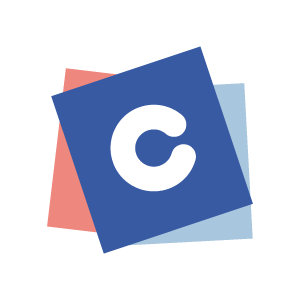
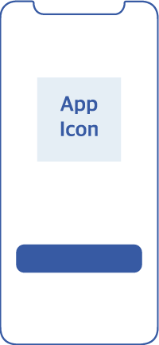
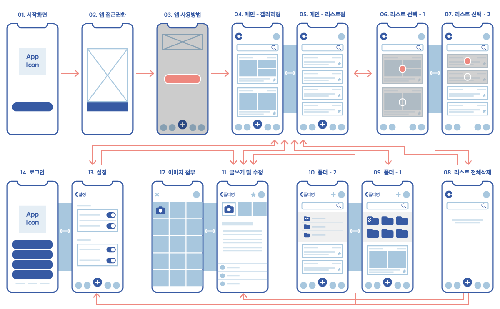

color
memo
ios Application
삶의 여유를 발견하다.
scroll
2021
컬러메모 iOS Application 제작
- 앱선정을 위한 자료 조사
- UX Core Value 에 관한 전반적인 기획 및 디자인
- 페르소나 및 시나리오를 기반으로한 UX Flow 작업
- 벤치마킹에 관한 자료 조사
- 무드보드에 관한 자료 조사
- 전체 앱에 사용할 아이콘 스타일 선정
- 스타일가이드 작업
- 프로젝트 발표자료 내 와이어프레임 페이지 일러스트 작업
- 최종 와이어프레임 및 최종 프로토타입 기초작업 및 완성
언제 어디서나 누구나 쉽고 빠르게.. 다양한 색으로 일기, 정보, 아이디어 등 당신의 이야기를 기록해보세요.
-
target
자료 조사를 통해 적절한 타겟층을 선정
메모앱을 주로 사용하는 연령대와 용도를 결정 -
- 학생
직장인 - 20~30대
- 자기계발
- 학생
-
color
선정한 타겟층을 기반으로 페르소나 선정
페르소나가 추구하는 방향성에 맞춰 주요 컬러 결정 -
- #375aa4
- #a9C8df
- #ef897f
-
keyword
페르소나가 추구하는 궁극적인 목표, 키워드 선정
-
- #Positeve
- #Relax
- #Easy
-
App icon
주요 컬러를 이용한 앱 아이콘 제작
다채로운 컬러의 색종이와 컬러메모의 “C”
를 이용해 동적이고 활발한 이미지를 형상화 - 
-
Display
선정한 타겟층을 기반으로 주요 사용 기기 선정
기본 폰트 Apple 시스템 폰트 사용 iphone 11(ios14, 414w * 986h)
-
icon
iphone의 기본적인 레이아웃과 정보기반 선정
-
persona
“ 맛집, 카페 정보를 빠르고 편리하게 정리하고 싶어요 ”
- 페르소나 캐릭터
- 이름박희진
- 성별여성
- 나이32세 (1990년생)
- 직업회계사 사무직
- 거주지서울시 구로구
- 가족관계아버지, 어머니
- 성격낙천적이지만 꼼꼼함이 부족해 가끔 실수함
- 사용자 환경퇴근 후 블로그 포스팅으로 인해 추침 시간이 길어진다. 기간에 따라 종종 야근이 있다.
사용자의 행동 패턴
- 오전 8시 20분 집 밖을 나서고 회사 근처 카페에서 음료를 사가는 편 (커피, 음료)
- 9시부터 일을 시작하고 업무 일정을 적어가며 일을 한다.
- 구내식당이 없어 점심시간에 직원들과 회사 근처에서 식사를 한다.
- 18시에 다음 날 스케줄 확인 후 퇴근
- 금요일 퇴근 길에 주말에 가고 싶은 곳을 고른다.
- 퇴근 후 일기를 간단하게 작성, 블로그 포스팅
- 약 23시에서 24시 취침
- 평일에 미리 정해 놓은 맛집, 카페를 주말에 간다. (여가활동)
- 야근 기간에는 한 줄 일기 정도만 작성
사용자의 경험 수준(중상)
- 손이 빨라 메모량이 많음
- 글을 작성하는 것에 흥미를 가지고 있음
- 새로운 정보에 흡수력이 좋아 새로운 것에 두려움이 없는편
사용자의 문제(방해 요인)
- 급하게 작성하다보니 두서없이 메모하는 경우가 많음
- 시기마다 야근이 있어 업무적인 스트레스가 증가해 카페인 중독 증상이 나타남
ux flow
평범한 직장인이자, 블로거.
맛집 탐방을 즐기며 평일에 검색해둔 맞집들을 주말에 다녀오고 글을 작성한다.
-
사용전
-
메모정리가 어렵다
편리하고 깔끔하게 맛집, 카페 정보를 정리하고 싶다.
-
어플 검색 및 설치
이웃 블로거의 글을 보고 메모어플을 설치했다.
-
-
어플 실행 중
-
메모 어플 실행
메모 어플을 실행한다.
- 1) 사용자 설정 및 동의(카메라 및 위치정보 접근)
- 2) 코치마트
-
메모 작성
찍은 음식 사진을 첨부하고, 블로그에 써야하는 맛집에 관한 정보들을 메모한다.
- 1) 메모 및 폴더 추가버튼
- 2) 빠른 메모, 폴더 생성 및 이동
- 3) 카메라 기능으로 촬영
- 4) 날짜, 시간, 위치 자동기록
-
추가 메모 작성
음식을 다 먹은 후에, 추가할 사항들을 메모한다.
-
-
사용 후
-
블로그 포스팅
미리 분류해둔 메모를 토대로 블로그 글을 작성한다.
-
포스팅 마무리
포스팅 시간이 많이 줄어서 행복하다.
-
wire frame
 